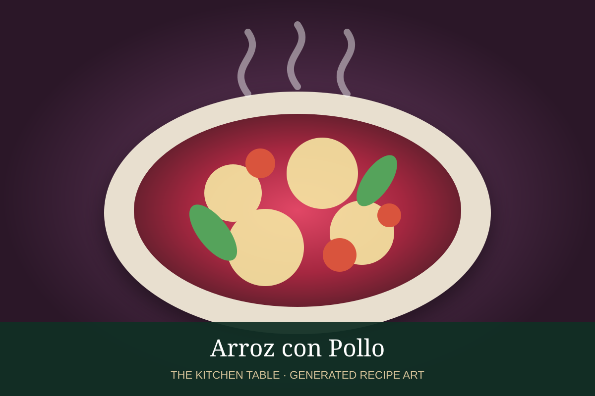

← Back to all recipes
RICE · URUGUAYAN
Arroz con Pollo
A colorful Uruguayan-style chicken-and-rice dish with peppers, peas, olives, capers, and savory broth.
50 minServes 6

Photo: TN Cocina
Ingredients
- 3 lb chicken pieces, bone-in or boneless
- 2 tbsp olive oil
- 1 medium onion, finely chopped
- 1 red bell pepper, diced
- 1 green bell pepper, diced
- 3 garlic cloves, minced
- 1 1/2 cups long-grain rice
- 3 cups chicken broth
- 1/2 tsp saffron threads or 1 tsp sweet paprika
- 1/2 cup green peas
- 1/3 cup sliced green olives
- 2 tbsp capers, rinsed
- Salt and black pepper
- 2 tbsp chopped parsley or cilantro
- Lemon wedges, for serving
Preparation
- Season the chicken with salt and pepper. Heat olive oil in a wide heavy pot and brown the chicken well on both sides. Transfer to a plate.
- Add onion and bell peppers to the pot and cook until softened, about 5 minutes. Add garlic and cook 30 seconds.
- Stir in the rice and saffron or paprika, coating the grains in the oil and vegetables.
- Pour in the chicken broth and return the chicken to the pot. Bring to a simmer, cover, and cook over low heat for about 20 minutes.
- Add peas, olives, and capers. Cover again and continue cooking until the rice is tender and the chicken is cooked through, about 5 to 10 minutes more.
- Rest off the heat for 5 minutes, fluff the rice, garnish with parsley or cilantro, and serve with lemon wedges.